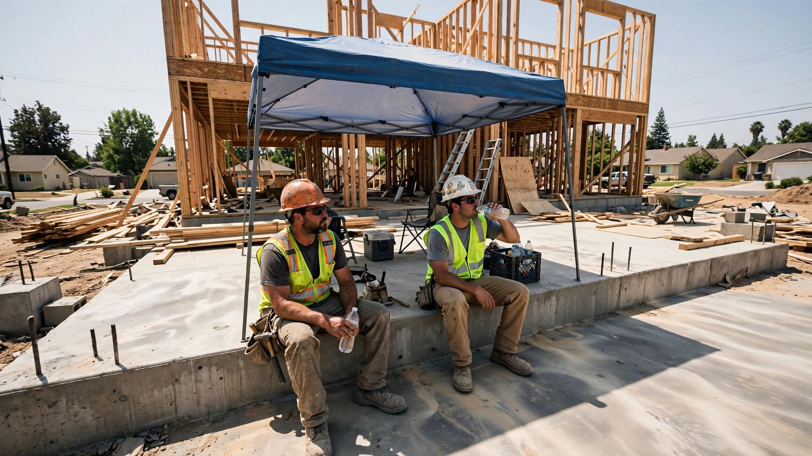

Your Builder’s Schedule Was Made in March. Nobody Recalculated It for a 108°F July.

A framing crew in Sacramento showed up at 6 a.m. last Tuesday to beat the heat. By 11:30, the wet-bulb globe temperature hit 89°F, and the foreman pulled everyone off the roof. They sat under a pop-up canopy, drank water, waited for the thermometer to cooperate, but it never did. At 2 p.m. they packed up and left. An eight-hour day became five and a half, and one of those hours was mandatory rest. The homeowner’s schedule slipped by a day, and nobody called her.
This happens every July and every August, without fail. The difference between the schedule your builder handed you in March and the one reality delivers in summer can stretch to weeks, and the reason is a number that appears on exactly zero residential construction schedules in America: the heat index.
The Numbers Nobody Puts in the Gantt Chart
Construction eats a third of all heat-related illness claims in the United States, the highest rate of any industry at 12.1 per 100,000 full-time workers, according to Washington State Workers’ Compensation data. The National Council for Occupational Safety and Health tallied nearly 28,000 workplace injuries linked to hot weather annually in its 2026 Dirty Dozen report. D.R. Horton, the largest homebuilder in the country by volume, made that list.
But injuries are the visible cost, and the invisible one is productivity collapse. A meta-analysis of 14 studies covering 2,387 construction workers, published in SpringerMedizin, found that 60% experienced measurable productivity loss once the wet-bulb globe temperature exceeded 75.6°F. That is not a heatwave threshold. In most of the American South, it is a Tuesday in June.
Granular data makes it worse. A Columbia University and UC San Diego study analyzing 16 years of American Time Use Survey data found that on days above 90°F, high-risk outdoor laborers worked 2.6 fewer minutes for every degree above that mark, which sounds small until you run it across a 12-person crew over a two-week stretch of 100°F days in Phoenix, and you are looking at roughly 31 lost labor-hours, nearly four full workdays evaporated into the atmosphere without anyone marking them on a schedule.
A field study of rebar workers in Hong Kong, published in the International Journal of Environmental Research and Public Health, measured it at the task level: construction labor productivity dropped 0.33% for every 1°C increase in WBGT. At a Cal Poly research site comparing identical concrete projects in Sacramento and San Luis Obispo during summer 2024, crews in the Central Valley logged higher cumulative labor hours for the same scope of work, with the sharpest productivity declines hitting after lunch when the sun was directly overhead and the concrete was curing fastest.
What OSHA Is About to Require
OSHA has been working on a federal heat standard for years. No final rule exists yet. But the proposed framework has two trigger points that every residential builder should be planning around now, because the rulemaking is advancing and state-level rules are already live in California, Oregon, Washington, Minnesota, and Colorado.
At a heat index of 80°F, employers would be required to provide drinking water and designated break areas, and to implement acclimatization plans for new workers using OSHA’s “Rule of 20%”: a new hire works only 20% of a normal shift on day one in heat conditions, increasing by 20% each subsequent day. At 90°F, mandatory 15-minute rest breaks kick in every two hours, alongside an observation system for monitoring heat illness symptoms and periodic check-ins on anyone working alone.
OSHA estimates these standards would reduce heat-related illnesses by up to 96% and fatalities by up to 100%, and whether those projections hold up in practice is another question, but the compliance burden is not speculative. A crew of eight taking 15-minute breaks every two hours during a 90°F day loses two hours of collective labor before anyone touches a tool. Over a week, that is 10 hours. Over a summer, for a builder running six concurrent residential projects, the math starts breaking schedules that were drawn on a whiteboard in February.
AI Scheduling Tools That Factor in the Thermometer
The commercial construction world has started responding. Skanska, one of the largest general contractors globally, told Engineering News-Record in July 2026 that project teams now start work earlier, schedule physically demanding activities during cooler morning hours, and reassign crews to more controlled environments during peak heat. Jacobs, another major firm, said its teams are “increasingly using forecasting tools and heat-safety applications to guide operational decisions as conditions change throughout the day.”
Residential construction has not caught up, however. The typical custom home builder in the Sun Belt runs scheduling out of a spreadsheet or a whiteboard, with weather treated as something that happens to the schedule rather than something built into it. That gap is where AI scheduling tools sit, largely unused.
ALICE Technologies, based in Menlo Park, builds AI-driven construction scheduling that can model thousands of build-sequence permutations and weight them against constraints, including weather windows. The platform can recalculate a critical path when a heat event compresses available work hours in a given week, pushing indoor-ready tasks (electrical rough-in, plumbing, drywall hanging in conditioned spaces) forward and deferring exterior work to cooler forecast windows. For a $2.5 million custom home with a 14-month timeline, this kind of dynamic rescheduling could absorb two to three weeks of heat-related delays without moving the completion date, assuming the builder engages it before groundbreaking rather than after the first slip.
Procore’s platform integrates weather data into project dashboards, showing seven-day forecasts overlaid against scheduled activities so supers can flag conflicts before they happen. Autodesk Construction Cloud has similar weather overlay features. These are not exotic capabilities. They exist in tools that tens of thousands of commercial contractors already pay for. But in residential, where margins are thinner and tech adoption is slower, the scheduling adjustments still happen in the foreman’s head, on the morning of the day that is already too hot.
What This Means for the Person Writing the Checks
If you are building a home in any climate where July regularly exceeds 95°F, your contract almost certainly contains a force majeure or weather-delay clause. Read it. Most residential contracts treat weather delays as excusable but not compensable, meaning your builder gets more time but you do not get a price reduction for their slower pace. The schedule slips, your carrying costs on the construction loan keep accruing, and your rental lease that was supposed to end the month you moved in does not care about the heat index in Scottsdale.
Ask your builder three questions before signing:
First, does the project schedule account for reduced productivity during summer months? If the answer is a blank stare, the schedule is aspirational, not operational. A 14-month project starting in March with a summer through the framing and exterior phase should have at least 8–12 buffer days built into the June–September window, and most do not.
Second, does the builder use any weather-integrated scheduling tool? It does not have to be AI-powered. Even a manual practice of checking 10-day forecasts against the week’s planned activities and pre-shifting exterior work to cooler windows is better than nothing. The crews that showed up to a Sacramento roof at 6 a.m. were adapting. The schedule that still said “framing complete by July 18” was not.
Third, what is the heat illness prevention plan? California has required one since 2005, so this is far from hypothetical. If your builder cannot produce a written plan that names trigger temperatures, rest intervals, shade provisions, and an acclimatization protocol for new hires, that is a signal about how they manage risk in general.
Strongest Counterargument
Experienced residential builders in hot climates already know how to manage heat. They have been building houses in Phoenix and Houston and Las Vegas for decades without AI scheduling tools, and the houses got built. Early starts, crew rotations, and a foreman with 20 years of weather sense in his bones are arguably more responsive than any algorithm, because they adapt in real time to conditions no forecast model predicted. The argument that the industry needs AI to solve a problem it has been solving with common sense and Gatorade has a reasonable basis, particularly for builders who have never missed a completion date to heat. For custom homes where the superintendent knows the crew and the climate, a $50,000 software platform may be solving a problem that does not exist for a job that size.
Limitations
The productivity data cited draws from academic studies conducted in Hong Kong, Australia, and California, with varying measurement methodologies and sample sizes. Translating wet-bulb globe temperature findings from rebar work in subtropical Hong Kong to wood-frame construction in arid Phoenix involves assumptions about acclimatization, hydration access, and work intensity that the underlying studies did not control for. The 2.6-minutes-per-degree figure from the Columbia/UCSD study is a population average across all weather-exposed industries, not construction-specific. We have not independently verified that ALICE Technologies, Procore, or Autodesk Construction Cloud are being used for residential scheduling in the way described; their weather integration features were designed for and marketed to commercial construction. The OSHA proposed heat rule has not been finalized, and its compliance costs and effectiveness projections are the agency’s own estimates, not independently audited. D.R. Horton’s inclusion on the 2026 Dirty Dozen list reflects NCOSH’s assessment, which D.R. Horton may dispute.